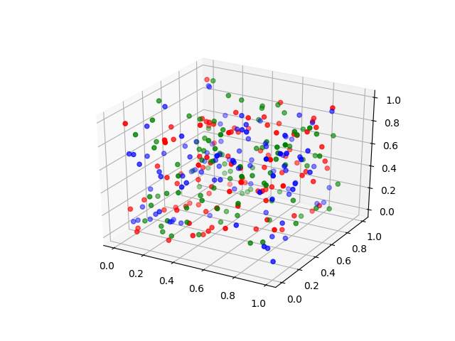
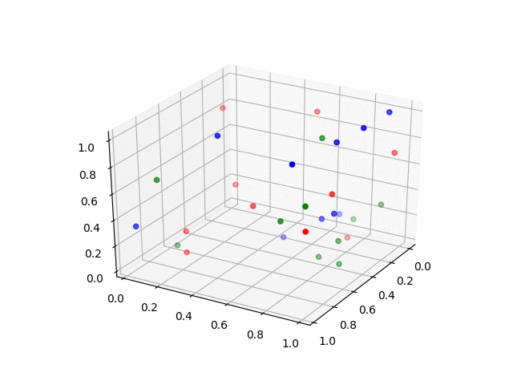
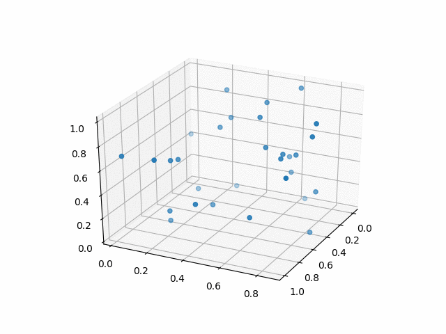

an iterative algorithm for clustering
hmm, that doesn't seem to be a very clear explination
this is the picture that I want to compress
it would be smaller if it used fewer colors
i'm going to use k-means to determine what colors it should use

it looks like i can

it looks like i can

it looks like i can
I don't know what the 111 is for though

I set the view angle for the plot and then save a screenshot to a file
i do this a bunch of times and stitch the pics together into a gif

this is how I stitched the pics together into a gif
convert -delay 10 *.png plotPics9.gif
the previous example has a bug where I'm still using degrees instead of radians for the view rotation so it doesn't go in a circle but more of an oval

this is how I stitched the pics together into a gif
convert -delay 10 *.png plotPics9.gif
this is way too slow

write the data to a file and open it with gnuplot
it is way faster to generate the gif, it glitches though and I'm not sure why

let's get some speed. it'll be pretty easy to implement this in c++ and then we'll get to compare the speed to python
so far, we've only seen that actually drawing the plot is slow, i don't have an idea of how fast the algorithm runs but I have a hunch that it's going to be slow
and I bet I can get some pretty graphs out of this
i want to jump into running the code as soon as i finish each piece so I'll use googletest to run my nugets of code
mkdir build
cd build
cmake ..
make kmeansTest
test/kmeansTest
#include "gtest/gtest.h"
#include "gmock/gmock.h"
#include "kmeans.hpp"
TEST(thisPasses, helloHello) {
ASSERT_EQ("hello", "hello");
}
TEST(thisFails,helloWorld) {
ASSERT_EQ("hello", "world");
}
Running main() from gtest_main.cc
[==========] Running 2 tests from 2 test cases.
[----------] Global test environment set-up.
[----------] 1 test from thisPasses
[ RUN ] thisPasses.helloHello
[ OK ] thisPasses.helloHello (0 ms)
[----------] 1 test from thisPasses (0 ms total)
[----------] 1 test from thisFails
[ RUN ] thisFails.helloWorld
/mnt/c/Users/richie/Documents/github/k-means/test/kmeansTest.cpp:14: Failure
Expected equality of these values:
"hello"
Which is: 0x43f9bf
"world"
Which is: 0x43fa11
[ FAILED ] thisFails.helloWorld (0 ms)
[----------] 1 test from thisFails (1 ms total)
[----------] Global test environment tear-down
[==========] 2 tests from 2 test cases ran. (1 ms total)
[ PASSED ] 1 test.
[ FAILED ] 1 test, listed below:
[ FAILED ] thisFails.helloWorld
1 FAILED TEST
I made a point type and a function to subtract them
template <int n>
using Point = array<int, n>;
auto minus(auto a, auto b) {
decltype(a) result;
transform(begin(a), end(a), begin(b), begin(result), std::minus<int>());
return result;
}
auto plus(auto a, auto b) {
decltype(a) result;
transform(begin(a), end(a), begin(b), begin(result), std::plus<int>());
return result;
}
I made a distance function
double distance(auto a, auto b) {
auto f = [](double a, double b) { return a + pow(b, 2); };
auto result = minus(a, b);
auto sum = accumulate(begin(result), end(result), 0, f);
return sqrt(sum);
}
I made a function to find the average of a cluster of points
template <unsigned long n, unsigned long x>
auto average(array<Point<auto, n>, x> arr) {
auto init = arr[0];
auto divide = [=](auto a) -> double { return (double)a / arr.size(); };
auto p = [](auto a, auto b) { return plus(a, b); };
auto acc = accumulate(begin(arr) + 1, end(arr), init, p);
Point<double, n> result;
transform(begin(acc), end(acc), begin(result), divide);
return result;
}